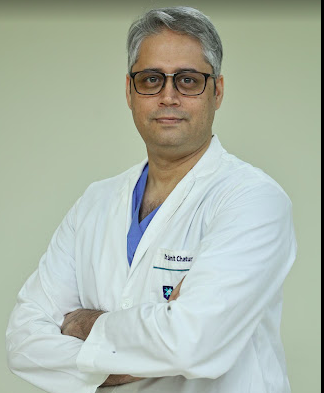

Director – KIIMS Hyderabad
Dr. Samit
Chaturvedi
Director – Robotic Urology, Uro-Oncology & Renal Transplant
Advanced urology care with expertise in robotic surgery, uro-oncology, kidney transplant, laser urology, and reconstructive urology at KIIMS, Hyderabad.

Doctor Photo
Dr. Samit Chaturvedi
Robotic Urology & Renal Transplant
Advanced Minimally Invasive Care
Robotic Urology & Uro-Oncology Specialist
Advanced minimally invasive urology care
Expert care for prostate, kidney, bladder, and complex urological cancers using robotic and minimally invasive techniques for faster recovery.

Robotic Urology Surgery
Advanced minimally invasive techniques
Specialised Urology Care
Kidney Transplant & Laser Urology Care
Specialized care for complex urological conditions
Expertise in renal transplant, robotic renal transplant, stone disease, prostate enlargement, and urethral reconstruction with a patient-first approach.

Renal Transplant & Kidney Care
500+ robotic renal transplants performed